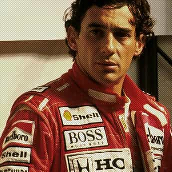
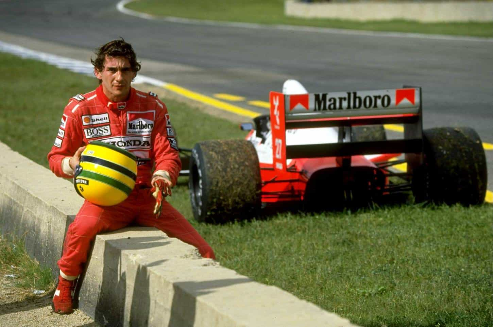
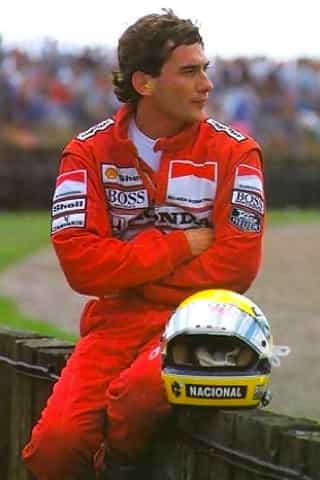

< < < Back
Who Is Ayrton Senna? – Return Of Kings
On May first of 1994, after a mechanical problem that rendered the steering of his car useless, Ayrton Senna would be found dead at the Tamburello corner on lap 7 of the San Marino Gran Prix. Senna hit the concrete retaining wall at around 217 kph. The cars telemetry later showed that Senna had reacted incredibly fast, having the brakes fully on at the moment of the accident. However, there was nothing he could have done to prevent his death. The reaper had scheduled him that day.
I have seen hundreds of hours of footage of his driving; I have also raced for part of my life and have seen countless hours of racing. I have lived through many things that have impressed me deeply, but I have seen very few that have left me in awe once experienced.

Ayrton Senna’s driving is the closest thing I have seen to divine revelation. Seeing anyone on the very edge, in the last stretch of human consciousness, is hands down one of the most beautiful, mystical displays of sheer brilliance that have filled me with joy. I compare his driving to Bernini’s sculpting, to Tchaikovsky’s compositions and is, to this day, one of the single most stunning things I have ever seen.
His discipline and commitment was astonishing; his bravery, determination, self-drive and ambition made him unique. He displayed an uncanny level of attention to detail that made him a titan in a land of giants. The names of Prost, Mansell and Schumacher all appeared amongst his rivals. They all raced against him and were all beaten. He understood that he needed to do whatever it took to reach his goal whether that was dying or spending several hours tuning his car.

In 1990’s Japan’s Gran Prix, Senna would become world champion if Alain Prost did not finish. In the first lap he crashed Prost on purpose to take him out of the race, risking both his and Prost’s lifes. That was his level of determination. That is what it takes.
His level of sintony with both car and track, his ability to take body, mind, soul and machine to their very limits while still keeping absolute control of it all was almost supernatural. I recommend you watch some of his footage; maybe you will be able to appreciate the intensity of his driving. It will elevate your spirit and nourish your soul once you see what he understood; that he was to fulfill a destiny of greatness that had given him an almost divine right to win. He was a regular visitor in that unexplored world where passion, excellence, and untamed talent meet.
He once said:
Once you are in it you are in it, you got to go all the way to the end because you commit yourself to such a level where there is no compromise. You give everything you have absolutely everything. Sometimes you find even more because it requires more if you want to stay ahead and you want to win. (…) So every time you are close to those limits the excitement increases, and your heart goes quicker, and your breath goes stronger.
It has occurred very few times in history that a man who has not won the most still manage to be the best. This is the case with Senna. He was undoubtedly the greatest racing driver that has ever lived. His grace on the wheel remains unchallenged and unrivaled. The Grand Prix venue misses him, I miss him, but he now rests among his equals, side by side with among greats.

Read Next: What Are You Prepared To Do?